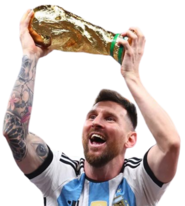
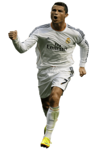
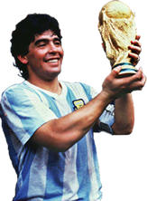

Lionel Andrés Messi cuccittini(Argentina)
Considerado con frecuencia el mejor jugador del mundo y uno de los mejores de todos los tiempos,es el único futbolista en la historia que ha ganado, entre otras distinciones, siete veces el Balón de Oro, seis premios de la FIFA al mejor jugador del mundo y seis Botas de Oro. En 2020, se convirtió en el primer futbolista y el primer argentino en recibir un premio Laureus
Lleva 1003 partidos jugados en su carrera y 793 goles. Este año, se consagró campeón del mundo con la selección argentina en Qatar y batió múltiples records
Cristiano Ronaldo dos Santos Aveiro (Portugal)
El delantero luso se ha ido superando así mismo hasta protagonizar un duelo legendario con Lionel Messi por ser el mejor jugador de lo que llevábamos de siglo XXI. El portugués se convirtió en el máximo goleador de la historia del Real Madrid (450 goles en 438 partidos) y dejó su sello en la Champions League como el Máximo Goleador de la Historia de la competición. Con 5 orejonas amenaza el récord de Paco Gento (que ganó 6 Copas de Europa).
Lleva 1.143 partidos jugados en su carrera y 820 goles.
Diego Armando Maradona(Argentina)
Un Dios para muchos y un demonio para otros (sobre todo para los defensas). Su legado se resume en ver su talento y potencia con el balón en los pies. Por el contexto histórico que vivió, su trayectoria deportiva, lesiones y sanciones está alejado de los números de otros futbolistas pero, a pesar de todo, los que le vieron jugar dicen que no hubo otro futbolista igual. En Argentinos Juniors explotó como estrella, en Boca Juniors se confirmó como ídolo bostero y en el FC Barcelona vivió un calvario de lesiones y polémicas que no le dejaron triunfar. Su llegada a Nápoles revolucionó el fútbol italiano al convertir a un equipo humilde en doble campeón del Scudetto y campeón de la Copa de la UEFA. Con Argentina, se perdió el Mundial 1978 en el último momento pero protagonizó la mayor exhibición individual de la historia de los mundiales en México 1986. Maradona marcó sus dos goles más emblemáticos ante Inglaterra en cuartos de final y guio a la albiceleste a la conquista de su segunda Copa del Mundo.
Continuará
Continuaremos agregando futbolistas en un futuro muy cercano.